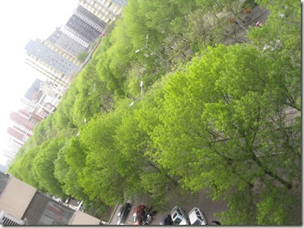

期望
这给人压力很大。当然这也包括自我期望，或者更多是自我期望。
这两年参与过单位几乎所有程序员的面试。面对那些比我资深的面试者，我都会趁着这个机会反观下自己。在以后的日子里，可能不方便出现“长大”这个词（我把这个词留给虎头了），但我的日历时间总是要过去。
现在这个感觉非常强烈。一旦设立一个阶段性目标，一年，三年，五年，十年，二十年，无论多少年，一旦设定，就总会达到——不一定是达到那个目标，是你总会非常结实地踩在那个点上，像是被时间刷地拽过去一样。
大学之前我有记日记的习惯。我会想像自己上大学是什么样子，工作是什么样子，结婚是什么样子，我的小孩是什么样子。或者换一个表述方式，我知道，有一个点我要上大学，有一个点我找到工作，有一个点我结婚，有一个点我有小孩。再以后，有一个点我跟我爱人要过三十、四十，然后我们的小孩也要踏过类似的点，用他自己的方式，而我们会在一旁观望。
这是真正让人警惕甚至焦虑的地方。想，即使一直闭着眼睛，我还是会不可避免地踩在比如这个二十八岁的点上。有一天我要踩在我四十岁的点上，那时，我可能会回想，比如今天的一些情绪，我一定会觉得，自己又一次风驰电掣般地被拽到四十。
2
宿命般地，你一定会站在那座岛屿上，不论多远多长。只是风景可能非你所望。
3
有时候你能选择风景，有时候你不能。一种糟糕的体验是，你可能会觉得，你被遗弃在那座岛上。
4
在那个点上，每个人都声称或者假装拥有什么。有人说我拥有金钱，有人说我拥有地位，有人说我家庭幸福，有人说我贡献社会，有人说我心态平和，有人说我经历丰富，有人说我一无所有但是很酷。
金钱、声望、奉献、幸福、心态、经历还有性格，都是非常好的东西。非常好的东西，我就不想拿它们来对抗什么。
5
在某种程度上，我抗拒竞争，厌恶比较。在舞台上，我看到每个演员或模特都很漂亮，但把她们凑在一起，然后她们各自展示想证明什么的时候，我就觉得这本身很残酷很丑陋。
5`
丑陋。当我用“丑陋”这个词的时候，更多表示一种性情方面的不赞同。这不是用来辩论的。
6
目的，价值。我们是不是都需要追求点什么？
我跟Li说：当然，首先我会按我的方式做事。但是无论怎么样，你都要跟着我哈。
我可能会很有钱，可能会一文不值，可能会马马虎虎过得去，或者任何一项，我可以拿90分，可以拿10分，可以拿60分。重点是，无论怎么样，那主语是我自己。
我希望我们自己是目的。金钱、声望、贡献、幸福、心态、经历还有性格，可以追求，可以不追求。可以认真，可以耍赖。
7
在一个自洽的逻辑体系里，一个主体要生存，他就必须摒弃这个社会大多数的价值观。
比如，以钱励志的故事，北师大一个教授对学生说，木有4000万身价不要来见我，也别说是我的学生。好，低于4000万的，在逻辑里被秒杀了，高于4000万的晋级。但这不是故事的全部。在一个生态里，你要考虑所有参与者的互动。这个教授，以及他4000万以上的成功学生，会迅速地被另外一个人秒杀，他俱乐部的标准，是高于北师大教授晋级成功的学生的身价。
在这里，主体的名字、以及金钱都不是重点。重点是标杆本身。但凡拿金钱、声望、贡献、幸福、心态、经历还有性格等做标准的生态，都会因为无秩序而坍塌。北师大教授俱乐部秒杀4000万以下俱乐部，清华俱乐部秒杀师大俱乐部，——但清华俱乐部也是战战兢兢，它知道，在这个游戏里，它一定要被另一个俱乐部，比如，西太平洋，秒杀……
8
——哦，我说的是逻辑世界。这只是一种自觉的想法。
9
排除金钱、声望、贡献、幸福、心态、经历还有性格的诱惑，但是？……
有朋友说我想得太多。可能吧。我只是还没达到任由时间流逝而不惊的相对平稳状态。
9`
语义上，我能清楚地找到其中的逻辑漏洞。我只是在表达，试图表达。
10
我羡慕一些朋友，他们/她们可能处在刚才所说的“相对平稳”状态。所谓相对平稳，是说把你今年的日子复制一份给明年，你会非常满足，当然再有些增益就更完美了。
往极端里说，这种平稳只跟年龄有关系。你要是能把99岁复制给100岁，那就美了。
但这不仅仅只与时间相关。你可以把这种平稳理解成一种轨迹的平衡，那你就可以想像到，有些朋友就很幸运地处在某种均衡中了。
11
每个人都处在自己的轨迹中。我说的“羡慕”，更多是一种祝福和赞美。
12
有时候我觉得保守是一种力量，甚至是一种美德。比如，我想把我的婚姻一直复制粘贴到以后。
这表明至少在某方面，我处在某种均衡的轨迹中。我只是期望更多。这是焦虑或者兴奋的一个触发点。
13
由于某种不可理喻的骄傲，这个期望是一个列表。
14
虎头今天整五个月。真正的小伙子了。
现在跟他说对他有所期望，是有点不够公平。以后说，也可能不太合适。
但我们心里对他还是有所期望的。去年这个时候，我们说，我们也没有什么期望，就期望他正正常常健健康康。好吧，期望是会升级的。现在虎头健健康康正正常常，我们说，我们也没有什么期望，就期望……
15
说期望。说期望的压力来自自己。因为自己一直在调整对自己的期望。
见识越多，经历越多，对自己了解越多——如果把自己当成一个有待认知的世界，当我说了解越多的时候，同时意味着未知更多，对自己的期望也就相应调整。我承认，这并不是一个好的策略，这只是一种诱惑，一个兴奋点。
16
今天再敲也敲不完了。在还没想好的情况下，我喜欢我还能保有一点幽默感，来自庄子《大宗师》：
浸假而化予之左臂以为鸡，予因以求时夜；
浸假而化予之右臂以为弹，予因以求鸮炙；
浸假而化予之尻以为轮，以神为马，予因以乘之，岂更驾哉！
假令造物者逐渐把我的左臂变成公鸡，我便用它来报晓；
假令造物者逐渐把我的右臂变成弹弓，我便用它来打斑鸠烤熟了吃。
假令造物者把我的臀部变化成为车轮，把我的精神变化成骏马，我就用来乘坐，难道还要更换别的车马吗？
<未完，但不一定有续集>
黄庄的春天
4月26号，下午四点回到北京。傍晚在楼下九头鹰，点了一个8人份的汤，喝了一半，一个四人份的玉米，吃了一半，一个2人份的鸭脖子，全部啃完。施施然，拍拍肚子就走。
楼下的树都给绿了，春天了。

2
上个周末，呆在波士顿，一天下雨，一天天晴，两天都到哈佛和MIT转悠。这段日子是MIT150周年，隔壁清华也在搞。
{kind=link}
清华，中国最成功的学校，亩产万斤的示范田。
3
挤地铁。又一次经过浪漫的十号线，金台夕照站（在北卡看到的这则消息）：
文字版：http://book.douban.com/subject/1309228/discussion/39067569/
视频版：http://www.tudou.com/programs/view/HsuqgUDkAFs/
4
现在是5月2号。回老家住了一晚。
骅骝君今天结婚，昨天去他家拜访。十年前去他家，他在路上画满粉笔箭头指路。
5
找朋友吃饭。找朋友吃饭是个很费劲的事。
首先，得在中关村附近吧？远了，我过去或者你过来，都不方便：一顿饭，至于吗，满城跑？——地理因素删掉名单的大部分。
还有，身份得合适。我结婚之后，据掉几乎所有的饭局。现在找人吃饭，也得将心比心。——划掉娶了媳妇的或者处在稳定关系中的，现在可以考虑的就不多了。
想到，小裴的媳妇还在武汉，他又住在人大西门，赶紧给拨电话。小裴说：我搬到**桥啦！现在还在武汉。。。。。
6
现实主义作品《赠卫八处士》（by杜甫）：
人生不相见，动如参与商。
今夕复何夕，共此灯烛光。
少壮能几时，鬓发各已苍。
访旧半为鬼，惊呼热中肠。
焉知二十载，重上君子堂。
昔别君未婚，儿女忽成行。
怡然敬父执，问我来何方。
问答乃未已，儿女罗酒浆。
夜雨剪春韭，新炊间黄粱。
主称会面难，一举累十觞。
十觞亦不醉，感子故意长。
明日隔山岳，世事两茫茫。
大概能料到，在数十年之后，我会越来越喜欢杜甫的作品。
我生之初
{kind=link}
由于一种奇妙的历法，现在的生日，有两种版本；当然这两种版本，都指向某一个特定的日子。上周在北卡，跟家人过了一个远程生日。这种类型的“生日”，或称作“本生”。在老家，过生日也叫“盼本生”。
这些日子也收到一些生日祝福。比如，国内某知名银行的信用卡中心，不但祝福我生日快乐，还要感谢我对它们业务的支持。感人啊。我说：谢谢，不客气。
现在是我呆在Swiftwater的最后一晚，当地时间是凌晨两点半。晚上跟朋友们一起吃饭，最后突然推出一盘生日蛋糕来。完全出人意料，虽然由于这家银行的善意提醒，让我记得还有这个版本的生日，只是没有“再”过生日的准备了。但真是让人愉快的事情。
晚上回来查邮件，世界某知名域名产商也给我发了个祝福邮件，标题很实在：
Happy Birthday – and SAVE
2.
每年生日，都会以“我生之初”来起兴，对自个来说，相当于一次大回顾。不过今年开始就没这概念，悠悠着看虎头就是了。
外婆的澎湖湾
1.
一个朋友在他的校园时代遇上台湾民谣的流行。我们又知道，那时候，至少在文本意义上，台湾还是“水深火热，坏人横行”。这位朋友至今还激动地跟我说：“《外婆的澎湖湾》，写得真美，哪里像坏人写的呀？一定是好人写的啊。”
2.
我3号到的拉斯维加斯。一到旅馆，行李先不卸下，打开网络，先上twitter.com再说。
还是不怎么习惯使用twitter。这里图的只是，打开网页，看成功登录了，旋即下线。用不用是一回事，能不能用则是另外一回事。
又测试facebook。好吧，由于n久没有登录，我需要做些安全认证才能进入自己的帐户。但，既然咱好久没有登录，哪能记得以前那些随心所欲的设置？
也是不怎么习惯使用facebook。要是个facebook迷，总是能找到方法时刻登录的。不过，还跟刚才一样，费尽心思得到是一回事，轻松得到又是另外一回事。
3.
{kind=link}
4月3号到7号，呆在拉斯维加斯。我喜欢那里的会议，更有意思的是见了很多好久不见或素未谋面的朋友。但是这个城市本身，却没有什么好说的，除了宾馆还是宾馆。没有去外面看表演，没有去酒吧，没有赌博，而且似乎为了某个登峰造极的目的，有一个晚上，我就干脆窝在宾馆里读了一本关于拉斯维加斯的旅游指南！！
Frommer’s Las Vegas 2010 by Mary Herczog, 2010 Wiley Publishing, Inc.
看，现在我有了关于拉斯维加斯的所有纸面知识。如果你有空，我就可以给你讲讲它的建城历史、最酷的酒吧以及最值得流连的餐馆，当然，还有赌博，包括赌场、玩法和技巧（不赌博？那你来拉斯维加斯干嘛！？）。
4.
拉斯维加斯是我美国之行的第一站。转到佛罗里达，朋友对我说：don’t judge America by Las Vegas!
生存还是
顾虑就使我们都变成了懦夫，使得那果断的本色蒙上了一层思虑的惨白的容颜，本来可以做出伟大的事业，由于思虑就化为乌有了，丧失了行动的能力。
——《哈姆雷特》“生存还是毁灭”
“生存还是毁灭”？这不是一个问题。由于生存是一个默认的状态，改变它需要更充分的理由。刚又看到这段独白，这次的重点不是那第一句，而是“顾虑与行动”，最后一句。
2
还是关于“顾虑与行动”。这是一个会把人逼上绝境的话题：思考是好的，行动也是好的！所以，一个叫“智慧”的东西出来了：你要知道啥时应该行动，啥时不应该行动。（不用费心找格林斯潘的漫画了，都一个道理）——而这几乎都是事后诸葛亮或者经济学模型，解释力超强，预测力为零。
3
这里的关键是，行动改变未来，不行动也改变未来，再加上一条，预期也改变未来。——这里的关键又是，未来不是一个一成不变的东西，未来是一只或然状态下的猫<咪>。
4
在这里绕圈子。对我个人而言，“顾虑与行动”，甚至也不是一个问题。对于一个喜欢在思维上穷尽可能的人比如我来说，行动，犯错，冒险才是更重要的（自行google《论语》之“闻斯行诸”）。
5
我的用词习惯。当说“可能”或者“大概”的时候，通常我自己是非常坚定的。
当我认为，比如，“MIT是世界上最好的大学”，我会说，“MIT大概是世界上最好的大学”。——这里我想表达的是一种毋庸置疑或者懒得跟人争的趣味。
还有，比如，我认为，“杜克大学是一所非常好的大学”，那我则会说，“有一所最好的大学，杜克大学”。这里我想表达一种倾向或者强烈的支持。当然，通常我不会吝啬自己的赞美，我会说，比如，在北卡，有最好的大学，NCSU、UNC和杜克。
自测题：下面哪句陈述比较恰当地表现了笔者的用词习惯？
a）北京大学是中国最好的大学。
b）北京大学大概是中国最好的大学。
6
扯远了。刚我提到，在思考与行动的角力中，对我个人而言，倾向于行动可能会是一个较好的选择。
但是，在思维中，还另有一种乐趣。讲一个故事，极端的故事。
假设你手头剩下一手好牌，比如，两张大鬼，通吃。当然，在这里，思考也是可以存在的（为零），你出牌就是（直接行动）。好，现在你选择不行动，我是说，你迟迟不出牌，手头持有两张大鬼而最后做输家（“乌龟”）。
这里的重点不是什么“变态”啊“糊涂”啊之类。这里的重点是，当你持有好牌而看着自己做下家，这表明，你的乐趣在牌局之外。
再见三角地
{kind=link}
现在是呆北卡三角地带的最后一个晚上。我住在Chapel Hill，Duke的一位老师家里，这里离UNC最近。17号上午去宾州。
我喜欢这个地方。这里有最好的大学，最好的公司，到处都是树。校园里都是树，SAS公司里也都是树，房子周边也都是树，哪里树都比人多。
下午睡了一觉，把这几天都补了回来。醒来看新闻，原来在我熟睡期间，一场罕见的龙卷风袭击了北卡，并有人员伤亡。接着上网查更多的信息，意外发现北卡也有一个地方叫”Shanghai”。
北卡纪行
4月15@Duke
{kind=link}
今一天都在杜克大学，杜克有漂亮的哥特式校园。辛苦Sandra，一天开车，带着我在杜克两个校区的各个楼群里穿梭，医学中心、眼科中心、生物统计系、临床研究所、统计系，早上九点一直到下午四点，一路拜访，下午三点来钟一起吃的午饭。提一下，在杜克临床研究所（Duke Clinical Research Institute）拜访的是SAS程序员Jack Shostak，说话很快很搞笑，他已经写了两本流行的SAS与统计书，明年他有一本关于CDISC的书面世，那将是业内第一本相关的书籍，期待中。
晚上杜克统计系的李博士，还有她刚取得教职的老公，杜克商学院的汪博士，带我一起去看杜克一个叫DCDT（Duke Chinese Dance Troupe）的学生社团的舞蹈表演。远远超出我的预期，非常精彩。以中国传统舞蹈为主，但舞者除了华人，还有大量的非亚裔学生，节目也穿插视频、街舞、印度舞、脱口秀和互动节目，形式多样，生动活泼。这帮本科生的想象力真是无穷无尽。
4月14@UNC
{kind=link}
这个UNC全称叫北卡罗来纳大学教堂山分校（University of North Carolina at Chapel Hill），是北卡大学系统中的旗舰大学，是美国州立大学中的“常青藤”。UNC的校园也挺漂亮，我参观的是生物统计系，然后他们系中午给请吃了个饭。
4月13@SAS
{kind=link}
4月13号，上午，拜访SAS总部。SAS市场部的Allison Lane女士开车带着我认识了下SAS的建筑楼群，感兴趣的如研发楼、体育场之类就就去瞅瞅。然后找以前研发的同事聊聊天。
SAS总部(SAS campus)的占地面积，相当于一个中型的大学，里面却不到4000人（想想那松快程度吧）。回北京来详细贴贴SAS之行，SAS大概是世界上最好的公司。
4月13@NCSU
{kind=link}
4月13号，下午，拜访NCSU，北卡罗来纳州立大学（North Carolina State University）。中午跟统计系的一位博士朋友在校园内一家中餐馆吃炒粉(没吃完)。
研究三角
Duke在Durham，UNC在Chapel Hill，NCSU在Raleigh，SAS在Cary。前三个地方圈起来，刚好是一个三角形(research triangle)，里面是一个工业园区，叫RTP(Research Triangle Park)，里面驻扎着像GSK、Quintiles、IBM等近200家公司。你大概能想像，为什么这里会是世界上最好的地方。
{kind=link}
SASGF11流水帐（一）：4月3号-5号
It’s wonderful. It’s awful. It’s wonderfully awful and awfully wonderful.
这句话是拿来形容拉斯维加斯的。不过我喜欢这句话甚于维加斯本身，就直接拿来套用这几天在凯撒皇宫酒店（Caesars Palace Las Vegas Resort and Casino）参加SAS全球论坛(SAS Global Forum 2011, Apr 4-7, Las Vegas)的感受了，其中把awful改成awesome就是。
首先，我入手一台Kindle啦。小号的那种，刚好可以给虎头用。虎头说：我还小，不能读书啦。好吧，老爸先帮你用着，不许偷懒哈。这台小玩意是下午参加一个invited focus discussion group时主办方给送的。
还有，今天下午我终于做完了自己的演讲，整个人就轻松很多。不过轻松也不会去一层的赌场。不喜欢的东西，连尝试的心情都没有。按着倒序时间（美国当地时间），记些流水帐。
4月5号，周二
我住在凯撒旁边一个较便宜的酒店里,叫Harrah’s Las Vegas Resort and Casino。早上七点起来，八点去凯撒。先是SAS研发中心在秀SAS的新玩意，然后是一个所谓的科技独脚秀，非常厉害，那哥们，Don McMillan，据说是世界上唯一一个用PPT讲笑话的演员——慢着，这哥们是斯坦福大学EE的硕士，是AT&T的前工程师。不想废话的，直接去他的主页去看：
这哥们真是让人人仰马翻，比如他讲到SAS Data Step就是SAS用户的国标舞步。回到正题，SAS研发中心的老大Keith Collins讲了下SAS发展的5个主要方面：
1. high performance computing
2.process automation
3.business visualization
4.data management
5.saas
然后一些SAS研发的工程师就相应展示了一下SAS9.3的新功能，看着还是蛮振奋的，比如传统的proc reg加上HP（high performance， proc HPreg），就能够实现高性能计算了。上午还听了一场佛罗里达大学荣休教授Ramon Rittel关于SAS与线性模型(GLM)的专题报告，其中穿插些历史信息，最有八卦趣味。
下午，前半部分是被邀请参加一个叫SAS BI Product Development的foucs group，主题是SAS BI产品的visualization和mobile computing，有近十位非SAS员工参加了这次讨论，由SAS公司的一些研发、产品与市场总监主持。
下半场是我自己的演讲。
晚上主要在social。先是SAS公司组织的一场mixer，里面还摆了几个赌桌，大伙凑一起吃东西，四处走走找人聊天，同时有SAS研发各个方向都摆了机器在秀东西（supp demo），北京研发的朋友也过来展示了一下他们在本地化/国际化方面做的工作。下午空闲的时候也去demo看了看，我最感兴趣的是clinical data integration、visualization和JMP。
最后参加了一场华人组织的chinese-speaking SAS user group，说年景不好，凑齐的只有四五十人。这次国内北京和上海也来了几家，不过我还是为自个的公司骄傲，数数只有我们公司是自个出钱，其他几家都是受益于乙方的市场活动了，噫。
4月4号，周一
这天排的很满。
早上跟约好的SAS公司的朋友在凯撒吃早餐，然后去会场转转。凯撒跟迷宫一样，我拿着地图，每次都走错。因为晚上才开始开幕式，人来得不是很多，顺便一路见见新老朋友。
之前一起在北大做SAS俱乐部的光辉同学，现在加拿大工作，这次在会场也打个碰头，真是很巧。
10点半到中午，参加一场培训，SAS公司Rick Wicklin讲数据模拟。他是个IML专家，写这方面的博客。
下午，1点的左右，找到我的menor、SAS全球大会组委会成员Duke，在他面前先排练了一把我的演讲。
2点的左右，找到我的分会场主席，Nancy，跟她聊些准备工作。
近4点，跟这次会议所有的mentor和mentee见面聊天。
5点的左右，参加first-timer session，下一届（2012）会议主席Andrew T. Kuligowski主持，非常搞笑的一位老SAS用户，讲讲会议概览，并穿插无数笑话。
6点的左右，opening night dinner。我和光辉跟Duke，还有这次会议主席Debbie Buck坐一起。Debbie还把她年迈的父母也带过来了。
7点开始，开幕式，几千人（？，大概是我见过的人数最多的会议）参加。SAS公司老大Jim Goodnight致辞，然后还请凯撒酒店的老板Gary Loveman客串一把。好吧，这位Loveman先生可不仅仅是这家全球闻名的酒店加赌场的老板，他在MIT斯隆管理学院拿的经济学博士，并曾经在哈佛商学院做教授，说话很快，人很风趣。
开幕式中还有几位高管在秀SAS在Ipad2中的绚丽应用。SAS最近在social media方面用力很多，俨然一股很酷的派头。
开幕式的高潮之一是会议主席Debbie Buck的入场。这次会议就是她的了，一身皇后的行头，坐在轿子里，由光着膀子的大汉抬进来，并由盛装的男女仕搀扶上台。
各路人马演讲完毕，会场接着是一场拉斯维加斯show。毕竟是严肃的技术论坛，这个show还真是中规中矩的杂耍，不过对我来说，总算是见识一把了（这样就不需要单独去看了）。
8点半到11点，social。组办方把凯撒的五个露天游泳池租下，大伙就一起喝水聊天，中间不时有小丑出来逗逗乐子。我就挨着把SAS社区有名的人物找到，一个个走前打个招呼。以后SAS-L上的ID，大多就有鲜活的印象了。
感觉SAS论坛会上瘾。就世界范围而言，SAS用户是一个很小的圈子，每年就这么一次机会碰面，感觉这对那些自身用户很重要。这是我的第一次，看以后能有多少机会了。几天时间，就能够认识世界上最知名的SAS用户，并且对SAS产品有个更全面的了解，更重要的是还能增强信心，开阔视野。我喜欢这个会议。
晚上很晚才睡。
4月3号，周日
这天下午赶到维加斯，傍晚去会议报到。维加斯是一座人工城市，太吵太闹，被认为是成人的迪斯尼乐园。但是作为一个成年人，我个人倒是更偏向于去迪斯尼本身（明年的SAS大会就在佛罗里达的迪斯尼乐园举行！！！）。好吧，我对明年充满了期待。
————-
又，有朋友问到SAS大会的事情，可以一起说下：
1.你可以随便以个人身份参加，注册缴费就是，会议注册费在300美元（学生）到1000美元（工业用户）不等。
2.一个省钱的办法当然是找人找机构资助；首先是你的公司（说明这是你个人发展的一部分，并且能够有助于公司形象的提升），其次是某个好心人，或者你就干脆找SAS中国，看你的活动能不能满足他们市场营销的需要。
3.如果想在大会发言，作为新手，你就要积极主动投稿。如果是老鸟，可能会议主办方会直接来邀请你。
4.准备会议论文的周期一般是半年。比如，明年的会议是4月22号到25号。那么，你最晚要在今年十月份把论文提交了，然后年底你就能知道自己能不能被选中了。如果没有被选中发言，还可以以poster的形式发布。
5.哪些话题值得写？组委会有一个单子，说可以写的话题。但是作为一个SAS用户，只要是你感兴趣的，把它写出来，一定要有其他用户感兴趣。有其他人感兴趣的东西，对这样的技术论坛来说，就是值得写的话题。一个策略是，先天马行空写出来，然后大刀阔斧削减。
6.现在想想，找人合作写是一个很好的策略，不但有群思广义的效果，更主要的是能防止自己偷懒。
7.对SAS用户来说，值得投稿的除了SAS全球论坛，还有PharmaSUG和CDISC Interchange；近几年还兴起一个数据挖掘的的会议，Data Mining Conference。一些传统的统计会议（比如JSM），很多也有相应的统计软件部分，都值得考虑。对于其他行业的用户来说，可能会有相应的比如质量控制、金融风险之类的会议。
8.行动最重要。一开始只要有“行动”本身就可以，这会激励后续真正产生结果的行动。任何事情都会耗掉你所有的时间，如果感兴趣，就让业余生活多一道比如论文的束缚。这种束缚是高尚的，类似于储蓄。工作后再写点正式的东西的确很难，这大概也能解释一点，为什么SAS大会要选在维加斯或者迪斯尼？因为那里提供了充足的诱惑。
一路同行
1.
昨晚下班直接去王府井。挤一号地铁，王府井A口下。这个站口直通后来我才知道的东方新天地。
故事是这样的。跟往常一样下地铁，不小心进入了一家叫东方新天地的珠光宝气的商场，然后整个人就找不到北了。打开纸条，我要去的地方是北京市东城区王府井大街235号外文书店。
在商场转悠，一心想把商场走穿，可惜这家商场跟马脸一样长。问路？打死也不干。
最后扛不住了，打电话给家里，向Li求救。然后这世界的秩序就恢复了。
2.
现在的头条已经不是日本地震海啸核泄漏，利比亚或者其他，一样在吸引人们的眼球。当然这场事故看着是更严重了。
国内，东南沿海已经测到了来自日本的轻微的放射性元素。同样，大西洋彼岸，美国的十来个州也发现了类似的微量辐射物。看了一下，去美国出差，刚好跟这些辐射同行（加州、内华达、佛罗里达、北卡、宾州、麻省）。
3.
四月三号出发，是自己第一次出远门。除了单位帮忙订的机票，啥都没准备好。明天找些钱兑美元去。
今天中午在外教面前排练我的报告。老师现场示范了一遍，我跟着走了一遍。课上还提到《演说之禅》——下班后我就呆单位几乎是重写了一遍PPT。
说，有100个观众，应该兴奋起来才对。一个低端的例子，演讲高手希先生特勒，看到一大群人，自己先兴奋地发狂起来。
好吧，这是我需要的境界。
4.
玩。我不知道一个人怎么玩，除非你说翻本书或者打开电脑看文字写文字也叫玩。一个人也没有旅行的概念。
拉斯维加，打算白天开会，晚上在赌场里上网，写博客，翻带过去的书，然后干活，赶项目，给家里打电话。
佛罗里达，朋友安排我去迪斯尼，我的建议则是，参观佛罗里达大学吧。
5.
前些天想到些可能是真正严肃的问题。
我说：不说了，要是自己严肃起来，对不住自己。不严肃，又对不住它。
先有鸡
一些问题，胡搅蛮缠不清楚，比如，“先有鸡还是先有鸡蛋？”但是逼急了，一定要我表个态，那我就会回答：“先有鸡。”
理由有的。很多物种可以进化成鸡：鸭子可以变成鸡，恐龙可以变成鸡，某种微生物可以变成鸡，但是，鸡蛋，顾名思义，只能由鸡生出来。
故事就是这样的：起初，某种东西变成鸡，鸡生鸡蛋，后来，鸡蛋孵成小鸡（看，省事多了），一路循环至今。
2
一些人喜欢把问题推到某个初始点。这是个很好的策略。
如果是立论者，把问题推到起初，可以使整个论断（至少）看上去更为深刻全面。在争辩中，把问题推到某个初始点，经常可以让对手无所适从。比如，在理工领域谈论某某是否存在，你引入冥冥之中的第一推动力，我们的理工专家就要俯首称臣，坚信优美的物理定理之外，上帝（或者轮子啊）就是那个初始的推动者。
一会再谈这个问题。
3
还是关于初始问题。比如，某个party或者club，它的章程规定：新加入者必须有一位现任会员的推荐。这个很好理解，并且在我们的社会生活中广泛存在，不会引起什么误解。
现在有一个问题，这个party，总得有个创始人。这个创始人找不到另外一个人推荐他/她，那这位创始人，是不是违反了其入会章程？
我忘了哪位作者对这个问题有非常精彩的论述，先搁一旁。现在想想，其实在初始状态，信息量非常少，就一个奇异点，在很多情况下（统计意义上），推到初始点可能并不是一个好主意。怎么说？比如，在这位创始人创立这个party的时候，甚至都可以没有这条入会推荐章程，这样，就不存在他/她违背章程一说了。
这里的重点是，在一个演化的框架下，初始点并不具有它后续状态的所有信息。
4
回到第一推动那个问题，这里我不试图解答它。假设某东西重要是因为它是那个初始的第一推动力，那么，根据上一段的论述，这个东西可能就不是那么重要。或者，推到起初，可能并不像它看起来那么有力。
思路还不是很清楚，再议。
虎头100
今虎头100天。我给家里打电话：“虎头一百岁啦。”
愣了一下，该说“一百天”的。回家查查，百日还真有百岁的说法。
虎头一百岁，这真是个奇妙的想法。虎头一百岁，他爸就差不多一百三十岁啦。那时，两个老头子终于实现无差别的自由境界了：
–赫赫赫赫，虎头虎爸，我们五绺长髯……
{kind=link}
2 吹口哨的爸爸
Li跟虎头他外公外婆在家里带着虎头。我呢，据权威人士Li称，多是在虎头高兴的时候冲他吹吹口哨。
大致是这样。每天早上，虎头起，然后我跟着起，打理好自己，就去抱抱他，匆匆吃完早餐，上班。晚上回来，这个顺序就倒过来。
现在周末几乎不出去，在家能多跟虎头呆会。但虎头一哭，我几乎哄不住（虎头，你老爸哪会哄你呢？），然后就送给Li或他外公外婆，然后我就在一旁对着他吹口哨：赫赫赫赫，虎头看老爸五绺长髯……
日本
我不了解日本。但这些日子，也在中英文网站（甚至包括yahoo.co.jp）上刷屏，跟进日本地震海啸核泄漏的信息。
在网上看到一些言论，把这次日本的灾难跟中日历史事件联系在一起。我不会蠢到加入那些争论中去，只是转而翻翻了《圣经》：
亚伯拉罕近前来，说，无论善恶，你都要剿灭吗？
假若那城里有五十个义人，你还剿灭那地方吗？不为城里这五十个义人饶恕其中的人吗？
将义人与恶人同杀，将义人与恶人一样看待，这断不是你所行的。审判全地的主，岂不行公义吗？耶和华说，我若在所多玛城里见有五十个义人，我就为他们的缘故饶恕那地方的众人。
亚伯拉罕说，我虽然是灰尘，还敢对主说话。
假若这五十个义人短了五个，你就因为短了五个毁灭全城吗？他说，我在那里若见有四十五个，也不毁灭那城。
亚伯拉罕又对他说，假若在那里见有四十个怎么样呢？
他说，为这四十个的缘故，我也不作这事。
亚伯拉罕说，求主不要动怒，容我说。假若在那里见有三十个怎么样呢？
他说，我在那里若见有三十个，我也不作这事。
亚伯拉罕说，我还敢对主说话，假若在那里见有二十个怎么样呢？
他说，为这二十个的缘故，我也不毁灭那城。
亚伯拉罕说，求主不要动怒，我再说这一次，假若在那里见有十个呢？
他说，为这十个的缘故，我也不毁灭那城。
耶和华与亚伯拉罕说完了话就走了。亚伯拉罕也回到自己的地方去了。
办公室有两位同事，都有家人在东京经历着这场灾难。尽管我是在“打倒日本鬼子”的教育下长大，也明白现在日本依然有那么多的反华势力，但真不忍心对日本对日本人有偏激的印象。
我偶尔读读俳句，“古池塘，青蛙跳水咕咕响”。有松尾芭蕉这样的诗人，也让我不忍心对日本有偏激的印象。
学数学，伊藤积分，角古静夫不动点，小平邦彦，有这样的数学家，也让我不忍心对日本有偏激的印象。
中国好的东西，日本也有，坏的东西，日本也有；日本好的东西，中国也有，坏的东西，中国也有。无论在哪里，普通民众都不是政治家（政客），这样我真不忍心对日本有偏激的印象，因为也不忍心对自己的国家有任何偏激的印象。
观点与立场
1
我不太喜欢表达观点，或者说不太擅长表达观点。前些天写了个自我投资的东西，从逻辑的观点来看，为了突出某个观点，我故意省略了很多可能性。个人认为其中有价值的有意义的，只是一种性情、倾向或者立场。
有时候会被某种观点所折服，为它背后严谨的逻辑论证。有时候会被一种性情、倾向或者立场所吸引，它展现的就是自己想要的状态。可以有两种截然不同的观点，同样拥有强大的逻辑，这两种观点可以在脑海里并行不悖，它们或许只是展示了复杂生活/社会的某个层面。但被吸引的性情、倾向或者立场却只有一种。
物以类聚，人以群分。把人分开或合拢的，可以是观点，但这种境界太低了（党同伐异就是一种），而且及不稳定：人容易并且乐意改变自己的观点（改变观点不是丢脸的事），但是性情却一成不变。
2
有时候听见人在振振有词地表达某种观点。他/她观点的对与错其实无关紧要，重要的是他/她同时表达或隐含了一种立场或倾向。对他/她的印象，会因为这种被显示的立场或倾向而大打折扣。
同样，表达观点的时候我特别谨慎：我可能赢过了一次争论，却输于某种偏颇的立场。
3
有时候我会故意表达某种偏颇的立场，我知道有些朋友也怎么做。这大概是由于某种极端重要性或者干脆就是一种幽默感（你认真就输了）。
4
有时候需要区别，哪些是幽默的成分，哪些是他/她严肃的东西。在我的分类里，一个严肃的、执着的、偏颇的人是最可怕的人。——可怕归可怕，对付起来却很容易，直接无视送回收站就是。
我的投资观2011
作为一个前经济学学子，我经常被问到证券投资之类的事（第一次见面），比如
问：您投资不？
答：然。
问：投资股票？
答：否也。
问：基金？
答：否。
问：期货、权证、黄金？
答：否否否。
问：那您投资房地产？
答：否也。
问：那您到底投资啥？
答：人。
……
我不是人口贩子（但我在这个行业倒是成功推荐了几位程序员），我说的是投资于人，是投资自己，投资家人。工作不到两年，这丁点钱，投资房产不够（杯水车薪），投资证券，又觉得得不偿失。想想，假设10000个单位投进去，又假设投资成功，一年给个2000的收益，20%的收益啊，非常好的战绩了。但想想，即使能有这样好的战绩，得来的，根本抵消不了这期间花的很多心思，而有这花心思的工夫，我早就可以做其他有意思的事情了。一句话，投资证券，最好的结果对我来说都不是很值。
我大部分的本科和研究生同学都在金融口，也会沟通些。他们有个观点值得注意，年轻时比如现在我这个起步阶段的证券投资，不是为了赚钱，而且为了增长投资经验。这很有道理，但仍然打动不了我。这里涉及的，更多是价值判断。比如，我觉得利用本来可以拿来炒股的时间精力，哪怕是读一本小说，对我的收益更大。怎么说？假设那相同的资源，可以用来投资赚1000块钱，或者用来读掉一部1000页的小说。对我来说，如果你逼着我不让读掉那部小说，我愿意花1001块钱请你放过我。
证券投资有两种功能，在你钱少的时候，给增加一些；在你钱多的时候，尽量保值，而且尽量升值。好，我的个人观点是，如果我钱少（正如现在的情况），那么，投资带来的那些潜在的升值打动不了我；如果钱多了，假设是100个单位，我愿意花10个单位，比如给银行，让银行吞掉或者其他机构和个人，最后能留下90个单位就可以了（学过微积分的你知道，“很多”减掉“一些”，还是“很多”）。
我认为的其他有意思的事，大多是提升自我的那些事。除了读小说（比喻的说法，其实这些年我读的小说极少；不过你可以把它替换成任何书籍），生活中还有很多有意思的事，抵得上证券投资或者房地产投资带来的收益。对年轻人来说，很多事情比钱更为急迫。——这不是站着说话不腰疼，事实上，我缺钱缺房子，但更缺其他的，比如一个更为宽宏大量的心态、一个更有深度的大脑、一个更犀利独到的眼光、一个更为鲜活的性情。如果我足够强大，我想倒是可能兼顾，那完美了，腰缠十万贯，骑鹤下扬州去；我是凡人，只好就着轻重缓急，读读小说去了。
当然，有高手可以说，你可以在炒股之余，再读读书呀。——这个饶了我吧，我知道你所谓“炒股之余”读的是什么书，那些所谓书，就是在书店横着摆放的、一般有腰封的、页数多但字数少的有所谓名人推荐的印刷品。
或曰：施主读小说，要是冻馁妻·子，如何是好？
这是好问题，但我不知道这个回答能不能让人觉着满意。第一，我比较幸运，我有一份饿不死人的工作。第二，还是比较幸运，我有一个能理解我的、有时候不想理解但能由着我的老婆，而且，她也比较幸运，她也有一个饿不死人的工作，而且也有一个能理解她的、有时候不想理解但能由着她的老公。第三，关于孩子，有以上两个幸运组合，小孩子也不能要求太多了，是吧幸运虎头第三？
关于投资小孩，刚读到一篇文章，说投资小孩的收益，在他越小的时候越高：

这大概也是一个常识。不过，这个图出自2000年诺贝尔经济学奖获得者赫克曼，就更让人欢欣鼓舞了。对大人重要的，比如上面提到的性情、心态和大脑，对小孩同样重要。让胖子吃饱（我是说投资小孩），但也不能让瘦子饿死（我是说要投资我们自己）。
胡氏宗谱序
/*翻出的这篇东西，是2001年，高中毕业那个暑假，为我们胡家重修族谱做的序。刚挑几句话google一下，还真是自个写的，就想感慨一下灵感只属于少年。当时是各地12个胡家村一起动员重修的族谱，我高中毕业，大概也算是一个秀才。
今年没有回家过年。父母要了虎头和虎妈的数字信息，把他们的名字也添进这部族谱里。
现在看这篇习作，文章的层次还行，语言有些生硬，拼凑的痕迹很浓；立意方面，想推陈出新，不过情绪都笼罩在文言里，有摇头晃脑才子佳人般的东西。
有空可以再写一个批注版。
*/
————————————————————–
胡氏宗谱序
昔所谓谱牒，皆言犹一国之史，盖止于信而已。若夫考订伪舛，正其讹缺，掇拾于煨烬之余，寻访于长老之言，事必有据，词无溢美，流风所布，鉴往知来，家之谱犹国之史，信夫！
然从来国史，皆为帝王将相作，至若芸芸众生，耕者征客，贩夫走卒，引车卖浆者流，无一字为记，无一名可传，其间耕读传家，说礼敦诗，风化教导，昭昭然如星月而湮于尘者，多矣。于今思之，犹以为憾。
夫民，国之本也。民之所向，国之所昌，祚之所承也。夫谱，书万人于一册，留英名于百世，正本清源，诚百姓之史也。又集千民于一宗，俾纷杂于一端，因流溯源，由本达枝，定序正名，莫不精当。岂不闻姓者生也，以此为祖，令之相生，揽一卷而知本，孝悌之心至矣；族者属也，其子孙共相连属，知所以同出，睦邻之意生矣。由此发端，所以禁为非，绝左道，启文明，清血缘，正婚姻，传礼仪，齐部族，立国家，谱之为用大矣！
若胡氏，其渊源也远。胡曹作衣，《吕览》所存，不知其可。吾族叙祖，必称胡公满。满公一名妫满，父虞阏父为周陶正，有虞氏舜之苗裔也。封于陈，谥曰胡，子孙因以为姓。《逸周书·谥法解》言：“保民耆艾曰胡，弥年寿考曰胡。”人乐其寿也。
其后胡氏绵延，星分各邑，名人辈出，史不绝书，若安定胡氏，华林胡氏，金紫胡氏，尚书胡氏，武安胡氏，皆擅一时之盛。硕儒魁彦，鹭武迭出，鸣道德，显文章，著令书，登台荐省，名播青史，望风怀想，能不依依？
又有赐进士第拜户部尚书名仲庭者，避唐季乱，由上元县乌衣巷口，迁饶之余干杨桥。宋时迁乐平新进乡万松山，时号中兴，名以胡坊传，即今复修谱之十二村之祖也。当是时，朝廷推其贤，士大夫从其游，天下慕其家法，蔚为一代观望。
接前修之绪，为后来之唱。吾知谱例，以欧、苏为高，大抵略远，简疏，阙疑，详信。观历代谱序，囿于时者多矣，若夫三纲五常，贵贱尊卑，重男轻女，皆一时之弊。子曰名不正则言不顺，言不顺则事不成，事不成则礼乐不兴，正名分，定次序，谱之所存。然父父子子，上慈下孝，翕然和乐，纲者，统制也，父为子纲，不亦陋夫？其余亦如此。钟鸣鼎食，簪缨冠带，固一代之骄；务本为耕，厚道持家，勤于国赋，称善乡里，虽贫亦有可道者，为力不同也，按分贵贱高下，不啻短视。又女子亦天之所钟，胡氏历代，不凡巾帼。若晋之胡芳，争樗晋武，有将种之誉，风范垂世，不让须眉。今世道为新，虽依夫道统，亦当有所鼎革，以契日新之义。
予不敏，以晚生举序，献芹大方，惟惶惟恐。诗云：无忝尔祖，可不懋哉！三稿成，是为序。
胡氏第45代孙胡江堂 撰
2001-08-21
虎头心动
1
虎头躺在童车里，虎头他爸挥动着那张序号为50的卡片逗他。一会又停下来，改推着车玩。问虎头：卡片在动，还是小车在动呀？
虎头正色答道：卡不动，车不动，仁者心动。
接下来就是银河星系般的沉默。
2
周四上午去美国驻华使馆交换通关文牒。为此我把自个所有的文件都整了一遍，包括虎头的出生证明。最后签证官（美国白人）就问我两个问题（中文）：
1）SAS是什么？
2）你公司卖什么？
同样用中文给普及了下SAS和疫苗。签证官接着看了下我的简历，over。
3
我四月初去拉斯维加斯参加SAS全球大会（SAS Global Forum 2011，Las Vegas）。Be there or be square? 这个四月最in的事情大概就是去维加斯。
一个朋友也去维加斯，他过去做SAS培训，听着太土了，他说自己是be there and be square。
终于为广大技术人员找到了一句比较酷的歌词：
It’s hip to be square.
4
找文件，挖出自个以前写的很多好玩的东西，包括《周易》与三段论、布尔逻辑与推理、科斯定理的数学证明、为胡氏家谱做的文言文序言等等，有空慢慢贴出来。
有个朋友说他翻出以前写的代码，大为惊叹，自己居然能写出这么漂亮的代码出来，说天才只属于少年云云。我尽量想自己还不老，不过同样惊叹少年虎头他爸的灵感，噫。
征途
虎头大哭，（俄尔）虎头他爸大哭。两人一起坐在街上大哭。
这大概是我想过的最悲催的情境，幸好没有发生。昨天下雪，今天雪化，我要去人大校园里取个照片，就抱着虎头一起出去吹吹风。这是我跟虎头第一次、长时间（来回四十分钟？）的一对一相处，回来时才发现自己后背都湿了，战战兢兢如履薄冰啊。
虎头看了下沿街的铺子，到人大校门时就睡了，直到回家。看，一个小男孩，就知道该在什么时候，该给他老爸以什么样的支持。
许多
一套杜曼闪卡，除了那个编号为50的彩色圆圈渐进卡，虎头还喜欢看那些黑白数字点卡。现在手头只有1-14的数字点卡，得再更新些了，不然虎头数羊时，就说“1、2、3、……12、13、14、许多”。
笑
家里有两个大人随时跟虎头逗笑，我跟Li有时间也去凑热闹。以前说过，虎头一笑，我整个就被他打败了。小孩爱笑，真是一件振奋人心的事。
但以后他不拿笑脸迎合我们了，这还真是一个挑战。虎头如果心里挺乐呵的，但就是要耍酷啥的沉默着，这得给我们增添多少无谓的担心和揣测。
虎头或曰：哭也好，笑也好，春去秋来，干卿甚事？
好吧虎头。
书目
于千万本书之中遇见你所遇见的那本，于千万年之中，时间的无涯的荒野里，没有早一步，也没有晚一步，刚巧赶上了，那也没有别的话可说，惟有轻轻的问一声：“噢，缘来是你？”
近日读书不多，改读书目去了。
定期收到北京豆瓣书店的旧书目录，比如，这期的主打是上海古籍出版社：
金诗纪事 陈衍 上海古籍 25
礼记译注（全二册） 杨天宇 上海古籍 60
齐民要术 贾思勰 上海古籍 68
入菩萨行论广解 隆莲 上海古籍 26
敦煌曲子词地域文化研究 汤涒 上海古籍 30
牧斋初学集（全三册） 钱谦益 上海古籍 175
勉斋小学论丛 单周尧 上海古籍 38
吴敬梓《诗说》研究 周兴陆 上海古籍 20
禹贡锥指 胡渭 上海古籍 98
乐城集（全三册） 苏辙 上海古籍 168
徐霞客游记（上下） 徐弘祖 上海古籍 98
洛阳伽蓝记校注 范祥雍 上海古籍 38
文心雕龙义证（上中下） 上海古籍 150
英文书，我订阅了一个网站, Any New Books? (http://anynewbooks.com/)。这最近一期的历史书有：
Triumph of the City: How Our Greatest Invention Makes Us Richer, Smarter, Greener, Healthier, and Happier By Edward Glaeser
Liberty’s Exiles: American Loyalists in the Revolutionary World By Maya Jasanoff
Imperial Japanese Navy Heavy Cruisers 1941-1945 By Mark StilleFrom Splendor to Revolution: The Romanov Women, 1847–1928 By Julia P. Gelardi
Inside WikiLeaks: My Time with Julian Assange at the World’s Most Dangerous Website By Daniel Domscheit-Berg
Start & Run a Personal History Business: Get Paid to Research Family Ancestry and Write Memoirs By Jennifer Campbell
Armed Humanitarians: The Rise of the Nation Builders By Nathan Hodge
British Cruisers: Two World Wars and After By Norman Friedman
The Last Jew of Treblinka: A Memoir By Chil Rajchman
读书目，就混个脸熟。在接下来的某年某月里，要是再碰到了，在任何一个机会，就要说一句how are you?(怎么是你？)或是how old are you?（怎么老是你？）。
阅读书目还能带来一种老套的满足感。不知道大伙以前是怎么使用图书馆的。着急的时候，比如，考试要用，就直接在图书馆网页搜索，查好编号和馆藏位置，然后直接杀过去。其他时候，我喜欢站在书架丛林里，把所有的书脊都读下来，感兴趣的，再翻下里面的版权页；以后需要哪本书，就直奔书架。有什么新书入架，也能第一眼挑出来。北工商、国图还有北大的三家图书馆，还有人大出版社的书店，都这么扫过一遍，腹有书目自己也觉得很饱满。有时候想，自己还真适合远古的目录时代，而不必是现在的搜索时代。
现在人大出版社离我住处是5分钟，北大图书馆是15分钟，国图是20分钟，打毕业来，就没再去图书馆摸过书脊了。
近日(微博体)
1
近日读书不乐。
这些日子是没怎么读书。在地铁里读了些印刷品。
2
地铁无趣，找出里面的几个对子：
天对地，雨对风，柳芳对劲松；
五道口，三元桥；双井对巴沟；
呼家楼，苏州街；牡丹园，芍药居；
公主坟，魏公村；军事博物馆，生命科学园；
……
好事如我者跟上。
3
背单词。Amos同学说她每天也就背一个list。Amos同学背的是GRE，一个list有150个单词。
我也背单词玩儿。用的是vocabulary buider。一个list是40个，一天背8个。
4
“只有渐变，没有突变”。
这句话出现在一个世纪前最流行的经济学教科书里，马歇尔的《经济学》。
5
虎头是家里的欢乐之源。虎头眼中的大人，都跟动画片的配音演员一般，笑声不断。
6
他爸一思考，虎头就大笑。
虎头一笑，我立马就被打败了。
7
作为父母，我承认，我会高估小孩子的成绩。会蹬腿了，就是马拉多纳·虎头；看了数字点卡，就是庞加莱·虎头；手指头刚会抓取，便成了斯维亚托斯拉夫·虎头。要是开始走路了，我也会跟其他朋友一样豪迈地说：“人类一小步，虎头一大步。”
可以想象一个场景，虎头拎着成绩单回家，虎头他爸惊喜地说：乖崽，都考47啦？
当然，另一个场景会是，虎头一样拎着成绩单回家，虎头他爸大怒：虎头，怎么这次只考98！
笑笑。
8
做父母，现在有一个体会，孩子最好只是你的成就之一。
9
上回提到给小孩打IPV疫苗，总的来说，在概率上，IPV比OPV来得放心一点。考虑到OPV百万分之一的风险，一些父母说：“OPV出事的概率很小，但轮到自己的小孩就是百分之百了。”——这种腔调，“虽然啥啥啥，但是对自己却是百分百”，我们在很多场合听过。
这不是一个贝叶斯估计的问题，而是一个“无法承受之重”的问题。
10
风险评估时，我们同时考虑可能性和严重程度。还是上面的话题，那个“百分之百”说的是严重程度。
后果很严重，但并不意味着我们就会不顾一切来避免。还是回到上面，OPV免费，为了避免那个百万分之一的风险，一些父母可能会选择200块的IPV（我选择了）。但是如果IPV的价格是2000，我会毫不犹豫地犹豫。
评估之后行动，人类考虑价格。人都会说一些疯狂或不切实际的话，其实大伙都是理性的人。
关于OPV和IPV：脊髓灰质炎（小儿麻痹症）疫苗
/***********
关键词：
小儿麻痹症
脊髓灰质炎
口服脊髓灰质炎疫苗(OPV)
灭活脊髓灰质炎疫苗（IPV）
北京IPV接种点
******************/
上午带虎头去中日友好医院打疫苗，IPV，预防小儿麻痹症的。虎头的建档医院是海淀妇幼保健院，本来是要在那里服用免费的OPV（也叫“糖丸”），但最后还是决定去朝阳给他打IPV。现在网上能看到某些婴儿因为服用糖丸而导致瘫痪的消息，很多年轻父母都很关心这个话题。刚好我对这个项目有过研究，做个笔记，感兴趣的朋友可以看看。内容都是基于公开出版物（列在文末），来自世界卫生组织(WHO)、学术杂志以及Wikipedia。我不是学医的，所以不用担心下面的内容会充满你看不懂的医学术语。另外，免责声明，这篇笔记的内容，只是我个人的一些记录，并不代表本人所供职的公司的意见。
先指出几个事实：
美国2000年停止使用OPV；
英国2004年停止使用OPV；
在国内，OPV是免费的，属于国家免疫计划中的一类疫苗；
现在北京的防疫系统，只能在朝阳的十来家医院或防疫站打IPV，一针198块钱，一共要打3针。一些涉外医院也提供，价钱更贵就是。
1.一种病毒：脊髓灰质炎（小儿麻痹症）
一种病毒，叫做脊髓灰质炎病毒（Poliovirus，简称polio），也就是我们通常说的小儿麻痹症病毒，多在5岁以下的人群中发生。小孩如果染了这种病毒，200个中就有一位会产生永久性的瘫痪（这其中又有5%到10%的人会死亡）。现在小儿麻痹症最严重的四个国家是阿富汗、印度、尼日利亚和巴基斯坦。
2.两种疫苗
小儿麻痹症不能医治，只能通过疫苗来预防。有两种疫苗，OPV和IPV，对全世界范围内控制polio起到了关键作用，它们都是20世纪五六十年代在美国开始研发的。
OPV全称是Oral polio vaccine（口服脊髓灰质炎疫苗），就是俗称的“糖丸”，口服的；
IPV全称是Inactivated polio vaccine（灭活脊髓灰质炎疫苗），要打针。
3.你能看得懂的免疫基本原理
打疫苗的基本道理，就是主动给你体内注入某种坏东西，从而让你体内产生抗体。等外界的坏东西真的来了，体内的抗体就可以起到保护作用。我们小时候都种过牛痘，预防天花用的。在古代，种的不是牛痘，而是人痘。比如，一个人得过天花，身上会结痘痂（食痂之癖的“痂”），这个“痘（痂）”就有某些免疫功能。从天花患者身上取出这些痘痂，磨成粉，吹入健康人的鼻孔，这样这个健康人就可能产生预防天花的抗体。
植入的那个坏东西（痘或者其他）很关键，分两种：一种是减活的，就是还有些毒性，但是毒性很小；另一种是灭活的，就是死的，没有毒性。你能猜到，减活的疫苗，对人体的刺激大些；灭活的疫苗，对人体刺激小些。
4.OPV和IPV
回到OPV和IPV。
OPV是减活疫苗，IPV是灭活疫苗。
OPV便宜，IPV贵些。
OPV口服，方便；IPV打针，对护士要求高些。
在临床试验上，OPV和IPV的效果都很好。前面提到，美国于2000年、英国于2004年停止使用OPV，但OPV现在仍然是世界上（包括中国）使用最广泛的预防小儿麻痹症的疫苗。
5.OPV的潜在风险
对OPV的一些担忧，来自一个叫vaccine-derived poliovirus (VDPV，脊髓灰质炎疫苗衍生病毒) 的东西。OPV含有的那些减活的病毒，可能产生变异，从而产生一种新的病毒。简单些说，就是你服用OPV是为了预防小儿麻痹症的，但是服用OPV还有可能就让你患上小儿麻痹症！
听着很可怕吧？其实不用特别担心，这种现象不是很常见（大概是百万分之一）。对广大发展中国家来说，服用OPV带来的好处远远超过它带来的这个坏处。世卫组织的建议是，发展中国家可以继续使用OPV，中等发达国家尽量从OPV转到IPV，发达国家继续使用IPV，最终目的是全球范围内停止使用OPV（有规划是2013年）。
IPV没有VDPV的案例报道。
6.来自中国的报道
根据一份来自中国卫生部2006年的文档（见下），中国2004年在贵州省爆发过VDPV(由于服用OPV而导致小孩致残事件)。
如果你google/baidu “糖丸事件”，可以看到一系列的讨论。从概率角度来说，OPV的确是安全的（前面说过，大概是百万分之一的风险，跟中彩票似的。但你可能会说中国儿童的基数那么大）。让广大父母担心的是国内疫苗事件的处理方式。
7.如何在北京给孩子打IPV
到我写这篇文章为止，北京不是所有的医院/防疫站都能提供IPV，你只能在朝阳区的十来家试点医院/防疫站找到IPV，另外北京的一些涉外医院也有些。而在整个北京市，估计只有几千人份的IPV疫苗（所以绝大多数的孩子都是服用糖丸）。这有限的IPV疫苗，都是进口疫苗，来自法国赛诺菲巴斯德（sanofi pasteur）公司，品牌叫做“爱宝维”(IMOVAX Polio(TM))增强型脊髓灰质炎灭活疫苗。我来讲讲这个故事。
爱宝维1982年在法国批准上市，1990年在美国批准上市，2009年9月在中国批准上市。为什么国内批准上市了还不让大规模销售而只在朝阳试点呢？批准上市了，就表明该产品在安全性等方面得到了国家相关部门的许可，在北京只能在朝阳试点，这更多是一个政治考虑而不是医学考虑。廉价优质的糖丸是国家根除小儿麻痹症的功臣，要是更多的父母知道糖丸的潜在危险而犹豫不让孩子服用，又因为IPV的价格而负担不起，整个国家的免疫计划就要受到影响。
中国疾病预防控制中心跟深圳赛诺菲巴斯德生物制品有限公司有个项目叫做“在中国选定地区脊髓灰质炎灭活疫苗（爱宝维）的上市后完全性研究”，北京朝阳区就是这个项目的选定地区之一。这个项目的概况你可以在下面的网站看到（英文）：
http://clinicaltrials.gov/ct2/show/NCT01278433
所以，在北京要打IPV（爱宝维），可以去朝阳区的各个医院/防疫站问问。一些涉外医院也可能有，我没有调查，唯一知道的就是北京SOS也有。文末我会提供朝阳区二十来家医院/防疫站的地址和电话（可能不全），看着方便程度，打电话问了。我家小孩是在中日友好医院的保健科打的，保健科也就是那个片区的社区防疫站，类似于北京大学木器厂，跟其他的木器厂区别不大（但是北京大学的木器厂啊，嘻嘻）。
8.参考资料
1). Polio vaccine
http://en.wikipedia.org/wiki/Polio_vaccine
http://www.who.int/mediacentre/factsheets/fs114/en/index.html
关于脊髓灰质炎以及OPV和IPV的一般介绍。
2).什么是疫苗衍生的脊髓灰质炎病毒?
http://www.who.int/features/qa/64/zh/index.html
英文版：http://www.who.int/features/qa/64/en/index.html
WHO关于VDPV的说明，中英文两种语文。
另见：
http://www.polioeradication.org/Polioandprevention/Thevirus/Vaccinederivedpolioviruses.aspx
3). An Outbreak of Poliomyelitis Caused by Type 1 Vaccine-Derived Poliovirus in China J Infect Dis. (2006) 194 (5): 545-551.doi: 10.1086/506359
Reprints or correspondence: Dr. Yu Jingjin, Deputy Director General, Dept. of Disease Control, Ministry of Health, 1 Xizhimenwai South Rd., Beijing, People’s Republic of China 100044 (yujj@mohmail.cn)
关于贵州2004年VDPV爆发的英文论文，通讯作者是国家疾控中心的官员。
4). WHO关于脊髓灰质炎根除计划的规划建议
http://www.polioeradication.org/Portals/0/Document/StrategicPlan/StratPlan2010_2012_ENG.pdf
中文缩写版：
http://www.polioeradication.org/Portals/0/Document/StrategicPlan/StratPlan2010_2012_CHI_ExSum.pdf
又见，
https://apps.who.int/vaccines-access/quality/vmc/opvipvmting/Policyoptions.pdf
9. 北京朝阳（可能有IPV的）医院/防疫站及其联系方式
1).卫生部中日友好医院
北京市朝阳区樱花园东街 010-64222973/84205001
2).朝阳区高碑店社区卫生服务中心
北京市朝阳区高碑店村250号 010-85758645
3).朝阳区将台社区卫生服务中心
北京市朝阳区酒仙桥路49号 010-64373140
4).朝阳区金盏社区卫生服务中心
北京市朝阳区楼梓庄中心街104号 010-84312118
5).朝阳区劲松社区卫生服务中心
北京市朝阳区劲松5区501楼 010-67782556
6).朝阳区金盏第二社区卫生服务中心
北京市朝阳区金盏大街2号 010-84333273
7).朝阳区三里屯社区卫生服务中心
北京市朝阳区北三里屯 010-64165682
8).朝阳区十八里店社区卫生服务中心
北京市朝阳区十八里店乡周家庄村329号 010-67473380
9).朝阳区双桥医院
北京市朝阳区双桥东路双桥医院 010-85391039
10).朝阳区团结湖社区卫生服务中心
北京市朝阳区团结湖北三条7号楼 010-85970998
11).朝阳区安贞社区卫生服务中心
北京市朝阳区安华西里2区11号楼 010-64248352
12).朝阳区崔各庄社区卫生服务中心
北京市朝阳区来广营东路马南里 010-84702051，84702507
13).朝阳区平房社区卫生服务中心
北京市朝阳区姚家园西里1号院1号楼 010-85573735
14).朝阳区豆各庄社区卫生服务中心
北京市朝阳区豆各庄乡豆各庄村 010-87391243
15).朝阳区左家庄社区卫生服务中心
北京市朝阳区顺源街1号 010-64672412
16).朝阳区潘家园社区卫生服务中心
北京市朝阳区潘家园华威里25号 010-87789890
17).朝阳区管庄第二社区卫生服务中心
北京市朝阳区杨闸环岛东瑞祥里小区17号楼 010-85709793-8126
18).朝阳区八里庄第二社区卫生服务中心
北京市朝阳区八里庄东里1号 010-65573886
19).朝阳区奥运村社区卫生服务中心
北京市朝阳区北沙滩6号院3号楼 010-64845518
20).朝阳区呼家楼社区卫生服务中心
北京市朝阳区金台路13#内2#西楼5层 010-85991801
21).朝阳区惠兰医院
北京市朝阳区望京北路18号 010-64390831,010-64390832